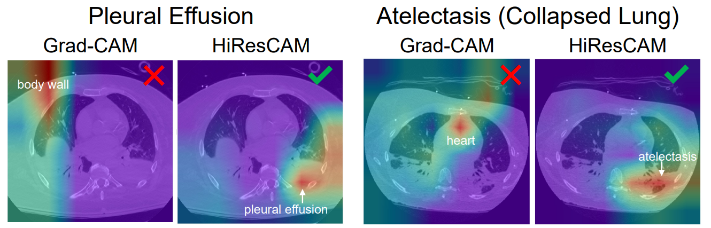
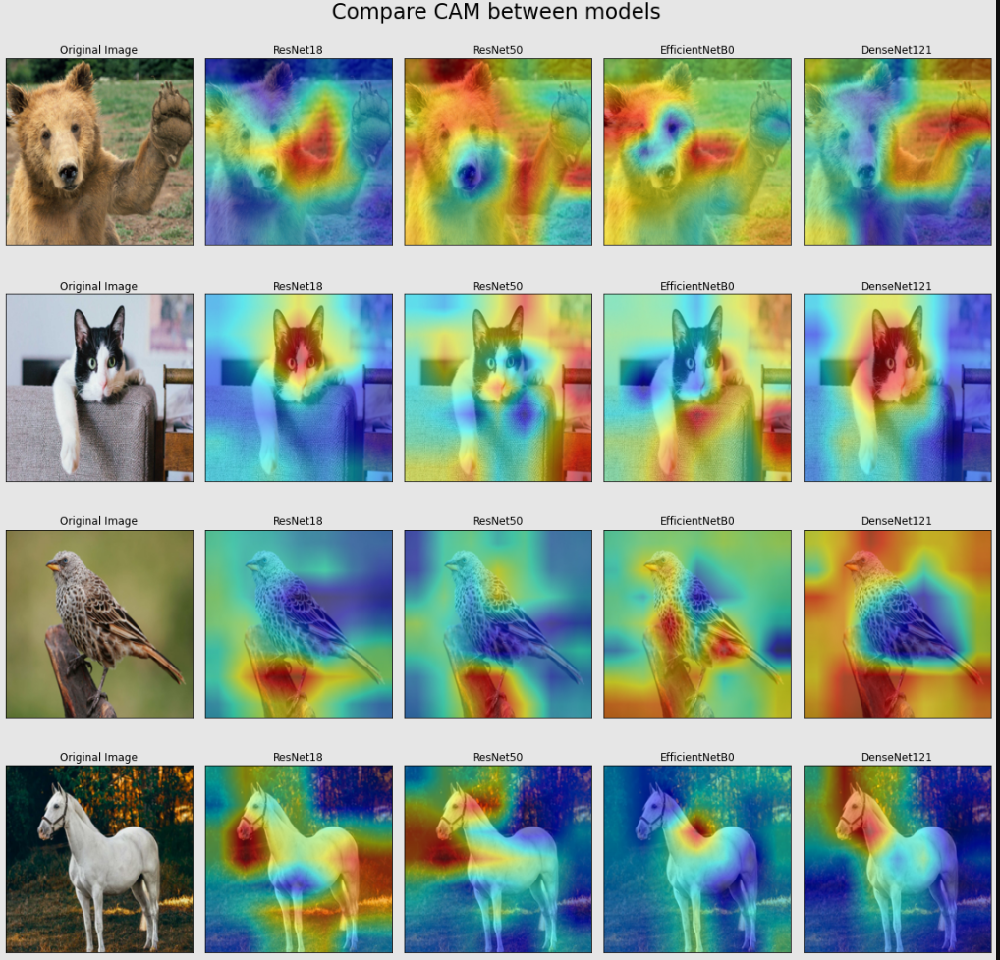
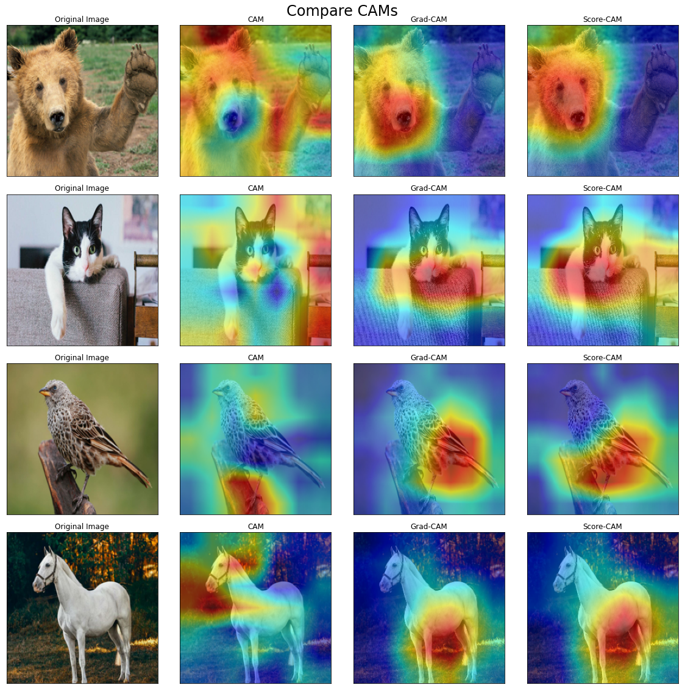

Giới thiệu
Class Activation Map (CAM) là phương pháp phổ biến trong việc giải thích sự hoạt động của CNN. Nó cho ta biết rằng CNN sẽ tập trung vào những phần nào của ảnh input để dự đoán xác suất ảnh đó thụôc về một class nào đó. Thông thường, CAM còn được gọi là Attention Map.
Để dễ hình dung hơn về CAM, ta có 2 ví dụ như sau:

CNN tập trung vào phần đầu của con chó để đưa ra xác suất mà bức ảnh thuộc class “dog”
CNN tập trung vào phần đầu của con chó để đưa ra xác suất mà bức ảnh thuộc class “dog”
CNN tập trung vào con mèo khi đưa ra xác suất mà bức ảnh thuộc class “cat”
Nguồn: GlassBoxMedicine
{kind=link}
Các phương pháp này được xếp vào nhóm post-hoc, tức là ta chỉ tiến hành sinh ra CAM để giải thích sự hoạt động của CNN sau khi mô hình này đã được huấn luyện và có một bộ trọng số cố định.
Việc giải thích CNN bằng CAM là rất hợp lý, vì:
- Ta có thể biết được mô hình của mình có đang thật sự hoạt động tốt hay không (tập trung vào đúng phần quan trọng trong ảnh), tức là có chứng cứ rõ ràng cho các dự đoán
- Nó giúp ta kịp thời phát hiện những đặc trưng mà mô hình “hiểu lầm” khi học về một đối tượng nào đó. Ví dụ, nhờ CAM thì ta thấy rằng mô hình học cách nhận dạng tàu hỏa dựa vào các đường ray trong ảnh thì rõ ràng là nó đã học sai đặc trưng. Trường hợp này hoàn toàn có thể xảy ra vì phần lớn bức ảnh có tàu hỏa thì cũng có đường ray, nhưng ngược lại thì không. Ta có thể có một chiếc xe ô tô chạy ngang đường ray 😀
Trong các phương pháp sinh ra CAM cho một CNN (theo từng input) thì ta có các phương pháp nổi bật như Default CAM, Grad-CAM, Score-CAM. Ta sẽ lần lượt đề cập đến các phương pháp đó.
Các phương pháp sinh CAM
Default CAM (2016)
Phương pháp này được đề xuất ngay từ khi các ý tưởng về CAM được công bố. Ta sẽ dựa vào output của conv layer cuối cùng trong kiến trúc, ngay trước fully connected layer sinh ra output của mô hình và các trọng số trong output layer.
- Đầu tiên, để mô tả về ý nghĩa của các feature maps trong output của conv layer cuối cùng thì ta xét ví dụ sau:
- Trong hình ảnh bên dưới, conv layer cuối cùng của ta là “Conv Layer n”. Output của nó có $k$ channel, hay là $k$ feature maps, mỗi feature map sẽ liên quan đến một đặc trưng nào đó trong ảnh input. Giả sử như feature map $1$ sẽ phát hiện mặt người trong ảnh, feature map $2$ sẽ phát phiện lông của con chó,…, feature map $k$ sẽ phát hiện tai của con chó.
Minh họa ý nghĩa các feature maps
Nguồn: Johfischer
{kind=link}
- Các trọng số trong output layer sẽ mang ý nghĩa là tầm quan trọng của feature map tương ứng vơi trọng số đó trong việc đưa ra xác suất dự đoán ảnh input thuộc một class nào đó.
- Ví dụ, ta xét class 2 như hình ảnh bên dưới Khi đó, với $k$ feature maps $F_i$, ta có $k$ trọng số $w_i$ và bằng cách tính tổ hợp tuyến tính của $F_i$ và $w_i$ thì ta sẽ có CAM của ảnh input ứng với class 2.
Phép tổ hợp tuyến tính giữa các feature maps
Nguồn: Johfischer
$$CAM_2 = w_1 * F_1 + w_2 * F_2 + … + w_k * F_k$$
- Lưu ý:
- Kích thước width và height của CAM đang bằng với các feature maps và nó thường nhỏ hơn nhiều so với ảnh input. Để có thể visualize được như trên, ta chỉ cần upsample CAM lên bằng kích thước của ảnh input.
- Với mỗi class khác nhau thì CAM tính được là khác nhau
Sau khi trình bày ý tưởng của CAM thì ta thấy ngay một điều kiện mà CNN cần thỏa mãn để có thể áp dụng phương pháp này là sau các conv layer thì nó chỉ có duy nhất một fully connected layer để sinh ra output, và điểm nối giữa hai phần này là một global average pooling layer (GAP). Ví dụ như hình bên dưới:
Nguồn: GlassBoxMedicine
{kind=link}
- Trong kiến trúc trên, ta có một CNN với output của conv layer cuối cùng là 3 feature map là A1, A2, A3. Qua GAP thì ta thu được một layer với 3 giá trị số thực. Theo sau đó là một fully connected layer sinh ra output của mô hình.
- Vì sao ta cần có duy nhất một fully connected layer?
- Ta đã đề cập rằng các trọng số trong output layer sẽ mang ý nghĩa là tầm quan trọng của feature map tương ứng. Do đó, nối ngay ở đây thì nó mới “đúng ý” (với mỗi neuron trong output layer, ta có đúng $k$ trọng số liên quan trực tiếp đến $k$ feature maps)
- Vì sao ta cần GAP?
- Nó sẽ tạo ra cầu nối giữa các feature map và output layer và đảm bảo rằng số channel trong input của output layer đúng bằng số feature maps của conv layer cuối cùng.
Viết một cách tổng quát và “formal” hơn, ta sẽ có như sau:
Xét một CNN thỏa điều kiện áp dụng CAM với conv layer cuối cùng có $k$ feature maps $F_i$, output layer có $C$ neurons ứng với $C$ class. Ma trận trọng số tại output layer là $W_{C \times k}$. Khi đó, với input $X$, CAM được sinh ra cho class $c$ là
$$CAM_c = W_{c,1} * F_1 + W_{c,2} * F_2 + … + W_{c,k} * F_k$$
Grad-CAM (2016)
Gradient-weighted Class Activation Mapping (Grad-CAM) là một phiên bản cải tiến của Default CAM với hai yếu tố sau:
- Không ràng buộc điều kiện đối với kiến trúc của mô hình. Phần fully connected layers được phép ở bất kì cách tổ chức nào. Lưu ý là ta vẫn dùng GAP (global average pooling).
- Thay vì phải áp dụng cho conv layer cuối cùng thì ta áp dụng cho layer nào cũng được, nhưng thường thì người ta vẫn hay cùng conv layer cuối hơn 😜.
- “Tầm quan trọng” của các feature maps sẽ được tính theo cách khác, và cách tính này sẽ dựa vào gradient!
Grad-CAM thường cho ra kết quả CAM tốt hơn, tập trung vào đúng vùng quan trọng hơn trong ảnh input khi so sánh với Default CAM. Vi dụ:
So sánh Default CAM và Grad-CAM
Nguồn: MDPI
{kind=link}
Xét một CNN với conv layer cuối cùng có $k$ feature maps $F_i$, output layer có $C$ neurons ứng với $C$ class. Gọi giá trị output cho class $c$ là $y_c$. Với ảnh input $X$, ta đặt:
-
Tầm quan trọng của feature map $F_i$ trong việc đưa ra xác suất $X$ thuộc class $c$ được tính dựa vào gradient của output $Y_c$ theo $F_i$, tức là
$$ \alpha_{c,i} = GAP(\frac{\partial Y_c}{\partial F_i}) $$
, với GAP là global average pooling.
Để ý rằng, $\dfrac{\partial Y_c}{\partial F_i}$ có cùng shape với $F_i$, ta tiến hành tính GAP để có được giá trị số thực $\alpha_{c,i}$
-
Từ đó, CAM cho class $c$ sẽ được tính bằng tổ hợp tuyến tính giữa $F_i$ và $\alpha_{c,i}$:
$$CAM_{c} = \alpha_{c,1} * F_1 + \alpha_{c,2} * F_2 + … + \alpha_{c,k} * F_k$$
Grad-CAM đã hoạt động rất tốt và được dùng nhiều trong việc giải thích cho CNN. Tuy nhiên, đến năm 2021 thì có 2 tác giả đã chỉ ra rằng có những trường hợp Grad-CAM cho ra kết quả không thật sự đúng, khi mà CAM được sinh ra tập trung không đúng vào các phần quan trọng. Vi dụ trong y học mà các tác giả đưa ra như sau:

- Lý do chính dẫn đến yếu tố này là ở phép toán GAP trong việc tính $\alpha_{c,i}$. Có những tình huống mà GAP sẽ làm mất đi một số điểm nổi bật ở trong một feature map.
- Phương pháp mới được giới thiệu là HiresCam (2021), bằng cách thay thế GAP thành phép toán tích element-wise. Các bạn có thể tự tìm hiểu về cái này nhé.
Score-CAM (2019)
Score-CAM là một phương pháp dựa chỉ dựa vào score của các class (vector output của output layer) để tính tầm quan trọng của các feature maps, từ đó sinh ra CAM. Kết quả ta có được là các CAM tốt hơn phương pháp Grad-CAM, khi mà vùng được chú ý trong ảnh input là đúng hơn, “gọn” hơn (không lan rộng ra những thứ không liên quan lắm ở các phía xung quanh). Ví dụ:
So sánh Score-CAM và Grad-CAM
Nguồn: Paper Score-CAM - Figure 1
Lưu ý.
- Ta xét score của class khi chưa áp dụng softmax để đưa về xác suất.
- Score-CAM cũng không có ràng buộc gì về kiến trúc của CNN và ta có thể sinh CAM cho các feature map tại bất kỳ layer nào như Grad-CAM.
Để trình bày phương pháp này thì ta phải dùng các kí hiệu toán học hơi nhiều một chút 😀
-
Increase of Confidence: Giả sử ta có hàm số $y = f(X)$ với input $X$ là vector $[x_1, x_2,…, x_n]^T$ và $y$ là số thực. Với một input cơ sở $X_b$ đã biết nào đó, tầm quan trọng của thành phần $x_i$ đối với việc tính ra giá trị $y$ sẽ bằng với độ chênh lệch của output khi ta thay đổi phần thứ $i$ trong $X_b$ bằng cách nhân thêm $x_i$, tức là
$$ c_i = f(X_b \circ H_i) - f(X_b) $$
, với $\circ$ là element-wise product, $H_i = [1, …, 1, x_i, 1, … 1]^T$ (thành phần thứ $i$ là $x_i$)
-
Bây giờ, áp dụng Increase of Confidence trên với việc ta tính tầm quan trọng của các feature maps: Giả sử ta có một CNN $Y = f(X)$ với input $X$ là ảnh, $Y$ là vector có $C$ phần tử, ứng với score của $C$ class (chưa áp dụng softmax). Ta xét conv layer thứ $k$, feature map thứ $i$ tại layer này được kí hiệu là $F_{k, i}$. Với một input cơ sở $X_b$, tầm quan trọng của $F_{k, i}$ đối với score của class $c$ $( Y_c = f_c(X))$ là
$$ C(F_{k, i}) = f_c(X_b \circ H_{k, i}) - f_c(X_b) $$
, với $H_{k, i} = s(Up(F_{k, i})$ là ta upsample $F_{k, i}$ lên cùng shape với ảnh input $X$, sau đó normalize nó theo công thức $Z \leftarrow \dfrac{Z - \min_Z}{\max_Z - \min_Z}$
Sau khi tính các giá trị $C(F_{k, i})$, ta đưa chúng qua softmax để có các giá trị tầm quan trọng với tổng bằng 1:
$$ \alpha_{c,i} = \frac{\exp(C(F_{k,i}))}{\sum \exp(C(F_{k,i})) } $$
Khi đó, ta có thể sinh ra CAM cho class $c$ như sau:
$$CAM_c = \alpha_{c,1} * F_1 + \alpha_{c,2} * F_2 + … + \alpha_{c,k} * F_k$$
Như vậy, ta đã xác định được tầm quan trọng của các feature map theo cách là chỉ dựa vào output của CNN (score của các class).
Nhận xét
Qua các phương pháp đã trình bày là Default CAM, Grad-CAM, Score-CAM, ta có thể thấy rằng điểm khác biệt lớn nhất giữa chúng là cách tính tầm quan trọng của các feature maps trong việc sinh ra output của CNN.
Cài đặt
Các bạn có thể tham khảo notebook sau: Google Colab
Nội dung của notebook trên là sinh ra CAM cho các mô hình CNN như ResNet, DenseNet, EfficientNet và so sánh output của CAM, Grad-CAM và Score-CAM. Các kết quả chạy được trong notebook trên như sau:
- CAM của các mô hình CNN khác nhau:

- So sánh CAM, Grad-CAM và Score-CAM của mô hình ResNet50:
